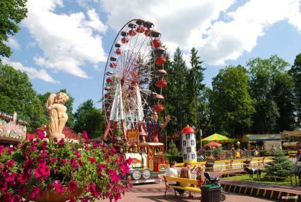

פארק השעשועים רבקולנד (רבקה-זדרוי)
4.5/5 Google · 9,960- שעות
- העונה מסוף אפריל עד אוקטובר. שעות אוגוסט 2026 לא פורסמו ברשת – לבדוק בלוח באתר rabkoland.pl.
- מחיר למשפחה
- כרטיס יומי לפי גובה: מעל 120 ס"מ 119 זלוטי באינטרנט (124 בקופה), 90–120 ס"מ 109 זלוטי, מתחת ל-90 ס"מ חינם. למשפחה כ-466 זלוטי (כ-107 €) אם בן ה-7 מעל 120 ס"מ ובן ה-5 מתחת. המתקנים כלולים. הערכה
- זמן
- 3 שעות
פארק קטן ורגוע לילדים צעירים: כ-50 מתקנים ב-6 אזורים, גלגל ענק, קרוסלות ורכבות הרים קטנות. ממש בדרך משדה התעופה להרים.
ניווט · Google Maps · Rabkoland – individual tickets (official) · Rabka-Zdrój town news (season)